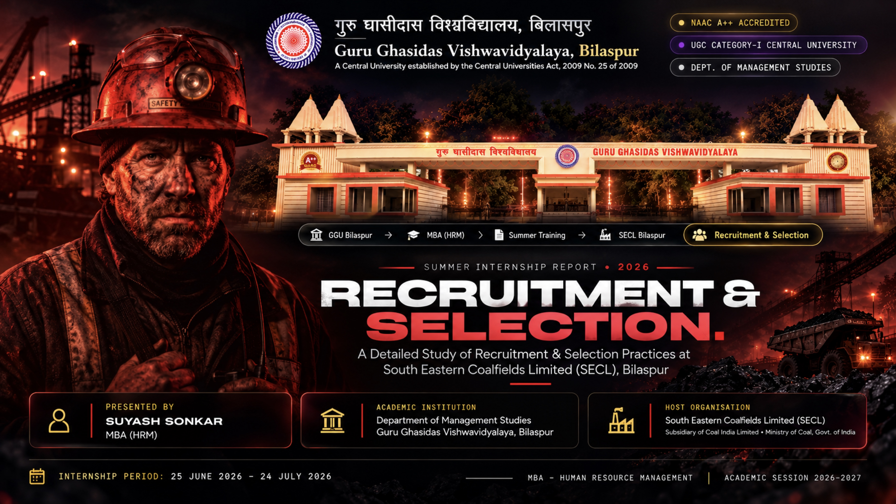
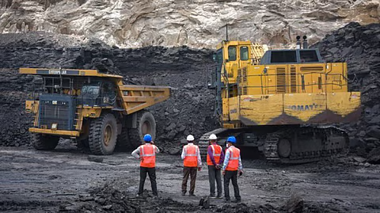
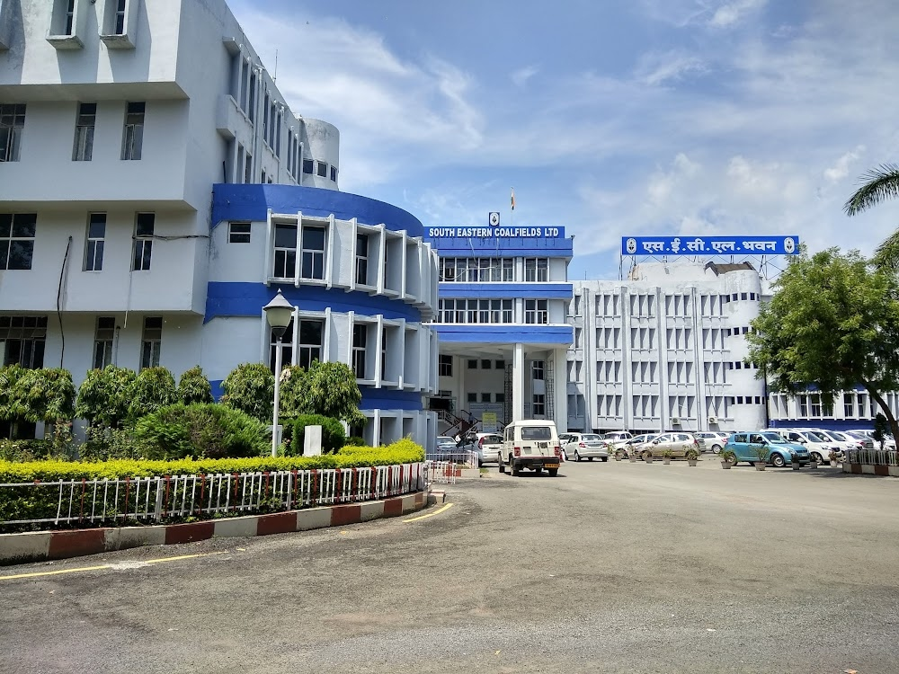
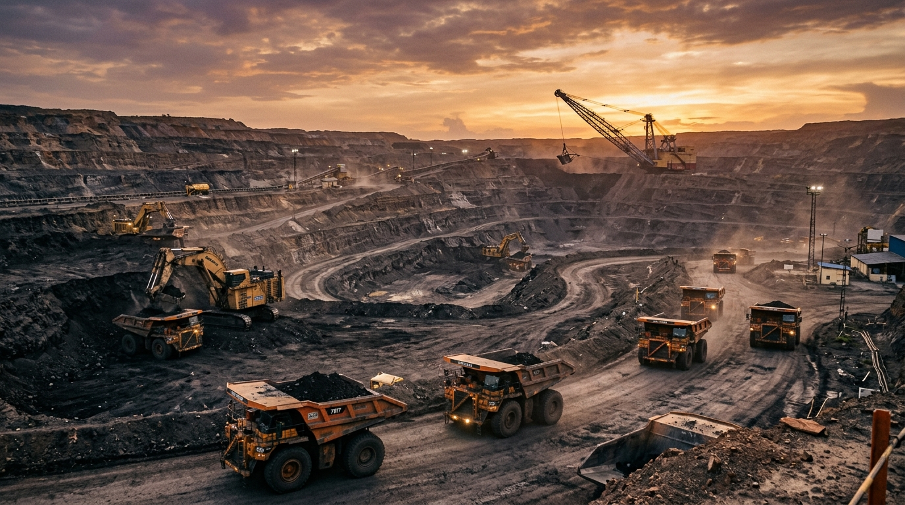

गुरु घासीदास विश्वविद्यालय, बिलासपुर • Guru Ghasidas Vishwavidyalaya, Bilaspur
Department of Management Studies • NAAC A++ Accredited • UGC Category-I Central University
SUMMER INTERNSHIP REPORT • 2026
RECRUITMENT & SELECTION.
A Detailed Study of Recruitment & Selection Practices at South Eastern Coalfields Limited (SECL), Bilaspur
EXECUTIVE SUMMARY.
Internship Study Overview

ORGANISATION PROFILE — SECL.
Corporate Identity & Enterprise Scale
Key Employee Groups & Cadres


DEPARTMENTAL EXPOSURE & ROTATION.
- Transfer documentation: Checking transfer orders, movement files, and posting records across 13 areas.
- Checking & arranging papers: Systematically organizing executive service documents and credentials.
- Record maintenance & document movement: Tracking file movement and maintaining service book continuity.
- Recruitment-related cases: Processing vacancy requisitions and sanctioned post limits.
- Promotion-related cases: Scrutinizing eligibility lists and internal progression files.
- Landowner employment cases: Verifying employment claims under state R&R policy.
- Compassionate appointments: Handling death-related cases under NCWA Clause 9.3.0.
- Land/lease matters: Reviewing land acquisition compensation and lease documentation.
- Employee-management relationships: Observing bipartite meetings, Joint Consultative Committees, and union dialogue.
- Workplace communication & harmony: Understanding grievance redressal procedures and statutory welfare under Mines Act 1952.
- Training: Studying technical refresher modules, managerial courses, and executive programs at MDI Bilaspur.
- Induction: Observing orientation modules for newly joined Management Trainees.
- Employee development: Building organizational capability and fulfilling DGMS safety training standards.
RECRUITMENT & SELECTION PROCESS.
Recruitment & Selection Pipeline
“Recruitment starts with clear job analysis and approved vacancies; selection strictly checks candidates against predefined job specifications.”
Job Analysis (About the Job)
- Key Duties: Supervising shift operations in open-cast mines, managing machinery dispatch, and safety monitoring.
- Safety Responsibilities: Ensuring strict compliance with DGMS safety rules and the Mines Act 1952.
- Working Conditions: Rotating shift work, active open pit mining environment, and heavy machinery operations.
Job Specification (About the Person)
- Education: Degree in Mining Engineering (B.E. / B.Tech) from an AICTE recognized institution.
- Statutory Certification: Valid Mine Manager's Certificate of Competency issued by DGMS.
- Physical Fitness: High medical and physical fitness standards under Mines Rules 1955.
- Key Skills: Decision making, safety awareness, leadership, and effective team communication.
MANPOWER PLANNING & GAP FORMULA.
4 Core Questions of Manpower Planning
Upstream workforce assessment before any recruitment begins
Calculating sanctioned posts vs current working employees across all 13 operating areas.
Identifying required technical qualifications, DGMS safety certificates, and job skills.
Planning hiring timelines based on upcoming retirements and annual coal production targets.
Allocating workforce between Bilaspur headquarters and remote opencast or underground mines.
Gap Formula & SECL Intake Pathways
Mathematical foundation and actual induction pathways at SECL
Determines net hiring or redeployment needs based on retirements, expansion, and sanctioned limits.
INTERNSHIP WORK & PRACTICAL LEARNING.
Practical Learning & Desk Exposure
Operational HR exposure across documentation, casework, employee relations, and training
- Service Books & Records: Observed executive service records, leave ledgers, and pay-fixation entries in EE.
- Transfers & Postings: Studied transfer orders, joining reports, and movement tracking across 13 areas.
- Document Continuity: Checked note-sheets, arranged papers, and tracked file movement.
- Sanctioned Post Reviews: Compared actual working staff against approved manpower limits.
- Landowner Employment: Observed employment files under state Rehabilitation & Resettlement (R&R) policy.
- Compassionate Appointments: Studied dependent employment files processed under NCWA Clause 9.3.0.
- Management-Union Relations: Observed Joint Consultative Committee meetings and union correspondence in IR.
- Workplace Harmony: Studied formal grievance handling procedures and dispute resolution methods.
- Statutory Compliance: Examined welfare and working conditions under the Mines Act 1952.
- Induction Programs: Observed orientation modules for newly joined Management Trainees at MDI Bilaspur.
- Technical Upskilling: Studied annual training schedules and equipment refresher courses.
- Safety Certification: Observed mandatory mining safety training compliance under DGMS guidelines.
CHALLENGES & KEY FINDINGS.
Challenges
Key Findings
Recruitment is connected with manpower planning.
Recruitment and selection are different processes.
HR functions depend on coordination.
Employee administration continues after selection.
Training supports employee development.
CONCLUSION.
Executive Internship Conclusion
“My summer internship at SECL helped me understand recruitment, selection, manpower planning and other HR functions. Through departmental exposure, I learned about documentation, employee relations, employment-related cases and training. The internship connected my academic knowledge with practical HR activities and improved my understanding of Human Resource Management.”